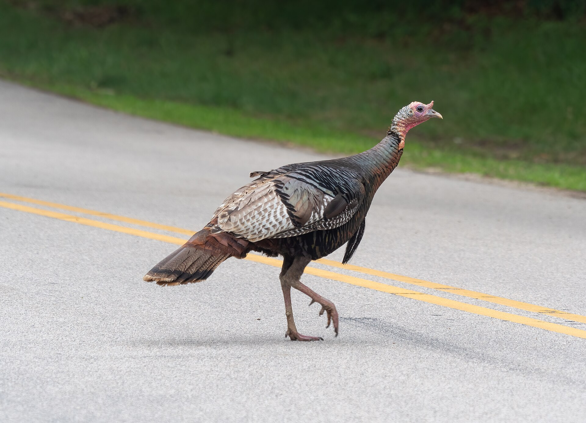
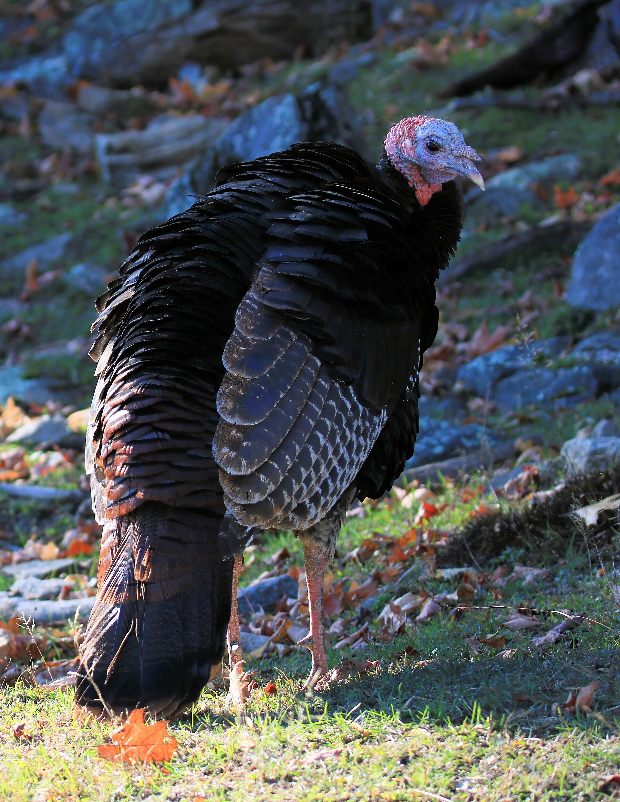
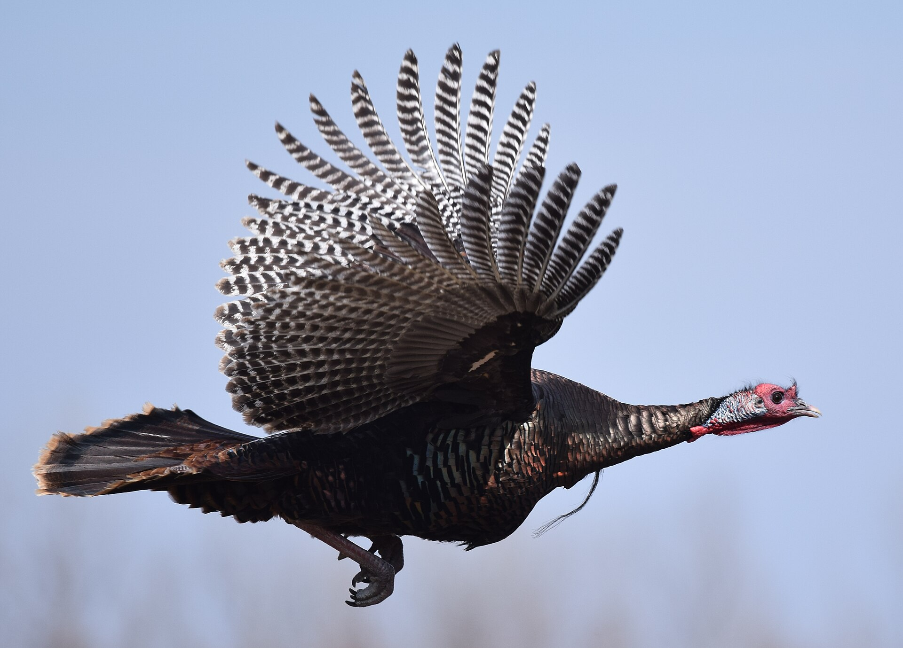
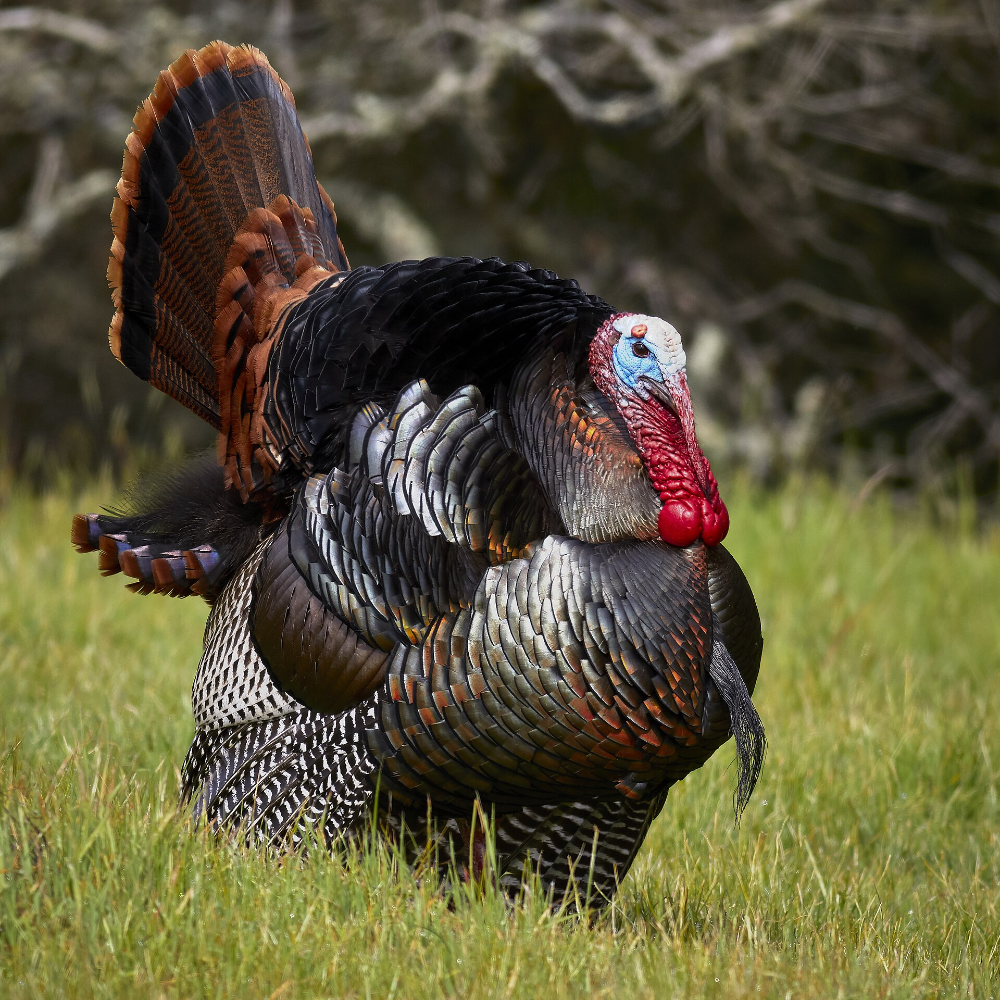
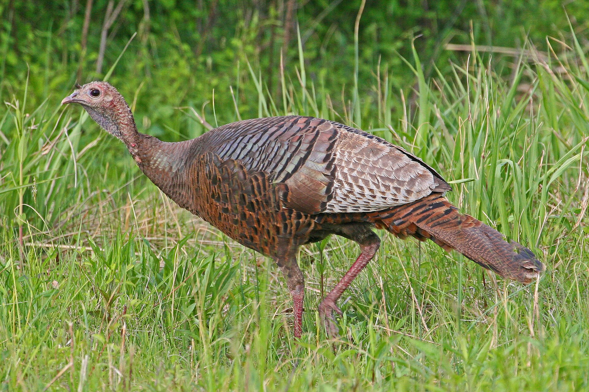
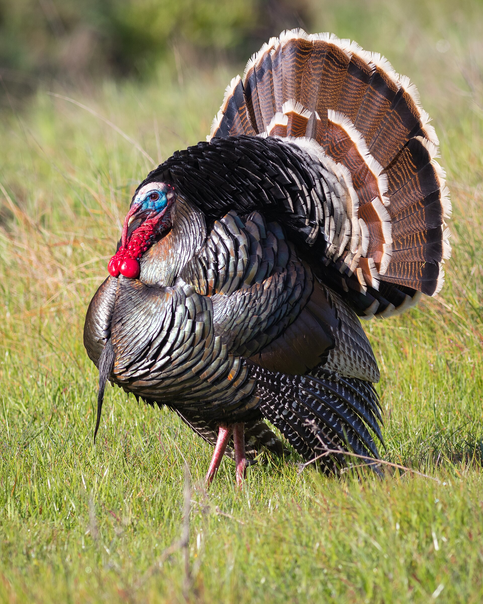

● A field guide to edit notation
LoneTurkey breaks down the shorthand editors write on timelines, EDLs and contact sheets: timecode, transitions, trims and shot sizes. One wild turkey stars in every example.
Every frame has a timecode address. Four pairs of digits count from hours down to single frames. The separator before the frames also tells you how the frames are counted.
; before the frames means drop-frame: frame numbers 00 and 01 are skipped every minute, except every tenth minute, so the clock stays in sync with 29.97 fps. : means non-drop-frame, where every frame number is used.

NDF · FF 00–23NDF · FF 00–24DF ; · FF 00–29DF ; · FF 00–59Each card shows two tracks: picture (V1) above and sound (A1) below. Clip A is the outgoing shot and clip B is the incoming shot. The red line marks the edit point.
These four trims are standard in every NLE. They differ in what moves and what stays fixed. Arrows show the direction of the drag, and the dashed outline shows where the clip was before.
An Edit Decision List (CMX 3600) is the plain-text version of a timeline. Each event lists its source, its track, the transition, and two pairs of timecode: where the shot comes from and where it goes in the edit.
Scripts, shot lists and bin labels use the same short codes for how much of the subject is in frame. Here they run from widest to tightest, with the same turkey framed at each size.


Editors write these keys in notes, such as "J-K-L to the strut, then I/O". Nearly every editing app uses this layout.

Before digital bins, editors marked contact sheets and film strips by hand with grease pencil. Many still use the same marks when they review stills and dailies.

?